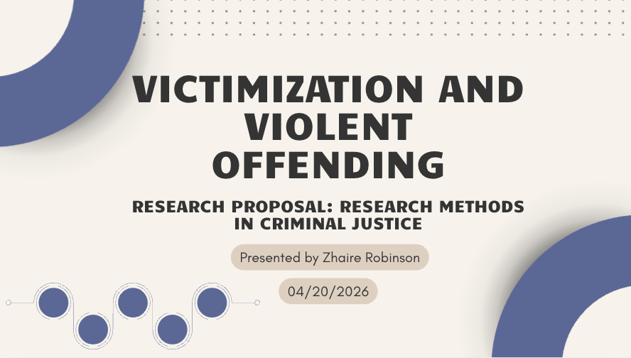
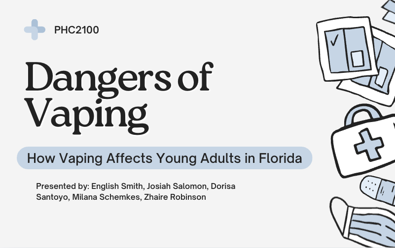
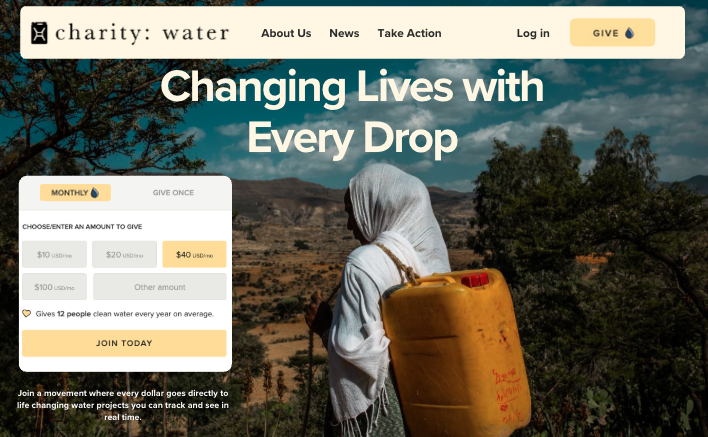

Public Health Sketch Assignment
Academic assignment explaining the importance of family clinics in public health because and how they help prevent disease and keep underseved communities healthy
View Project
Victimization and Violent Offending Presentation
Presentation focused on victim support systems and legal aid accessibility.
View Project
Public Health Approach to the Danger of Vaping Presentation
Academic presentation on a public health approach to reducing vaping focusing on community initiatives like mental health support, peer-led programs, and targeted outreach to high-risk groups like rural youth and college students.
View Project
Charity Water: Donation Landing Page Strategy
Designed a persuasive nonprofit landing page focused on donor engagement, visual storytelling, and audience targeting to increase awareness and support for global clean water initiatives.
View Project